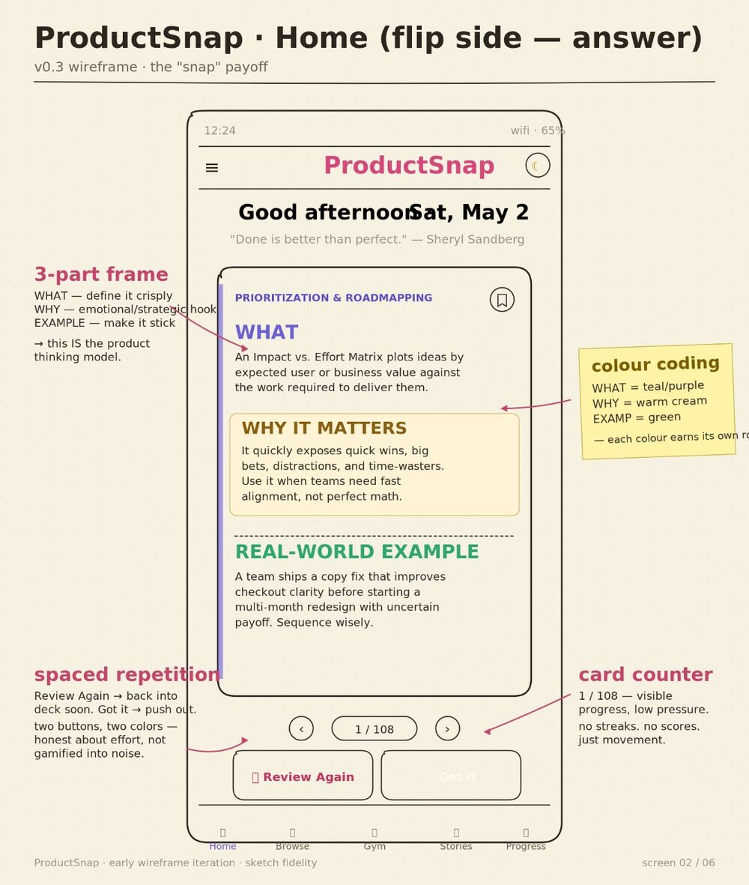
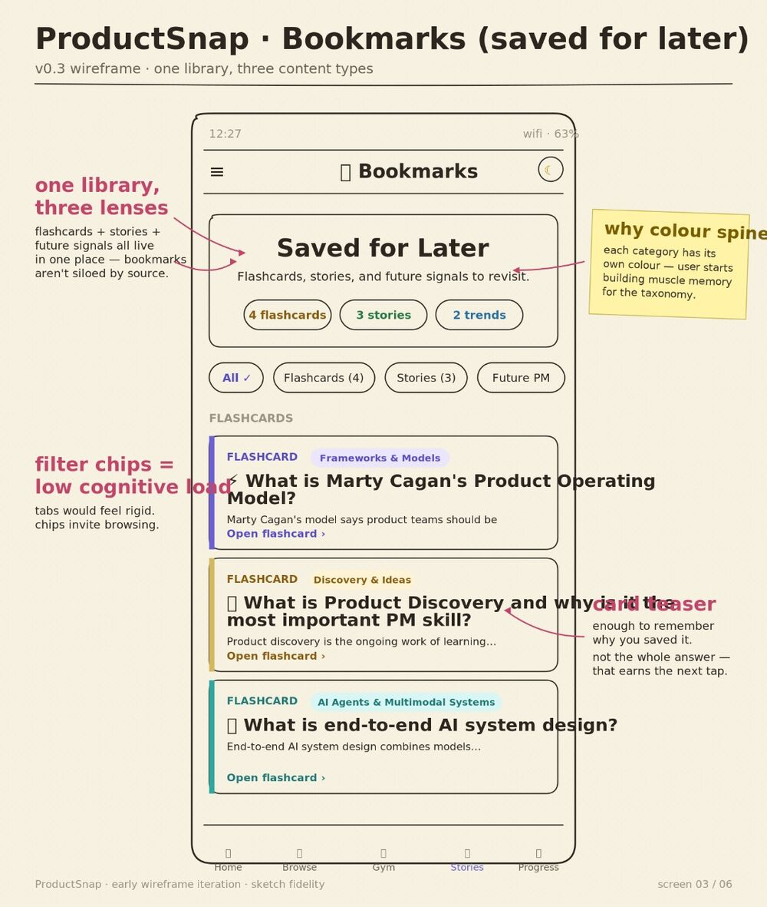
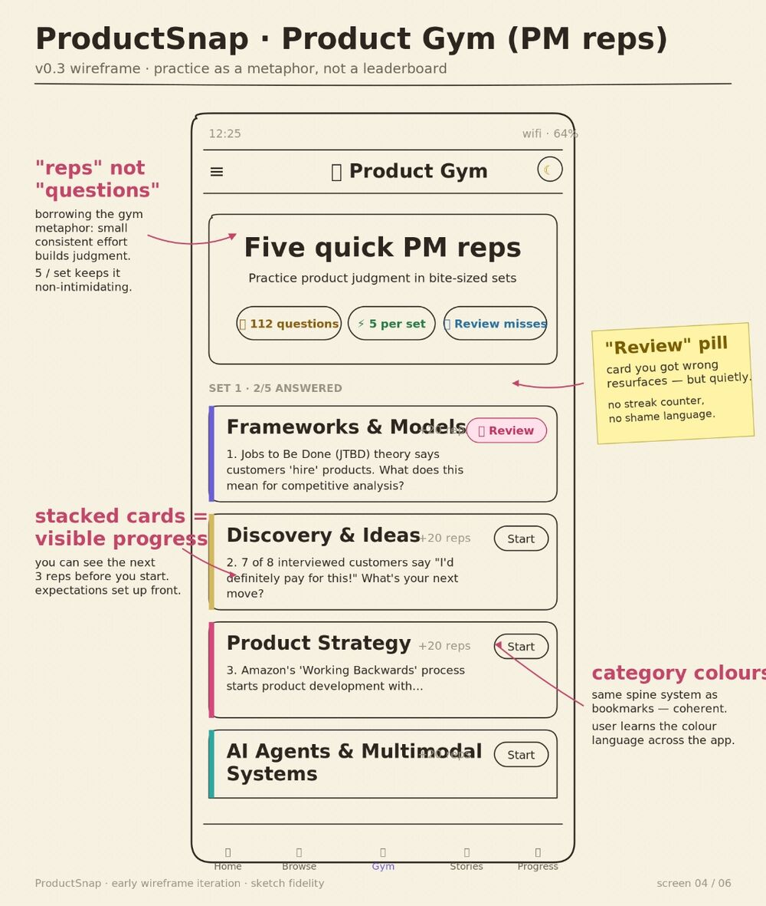
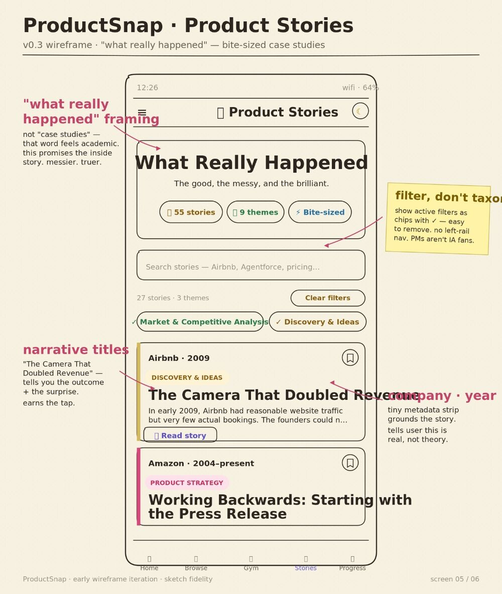
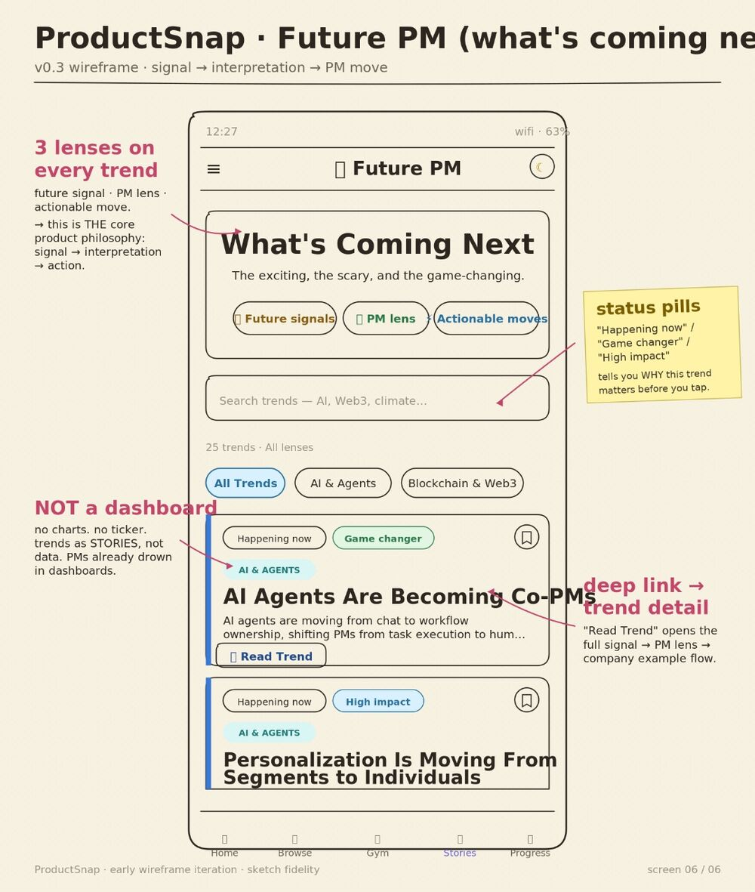

Everything here started as a pencil sketch.
I think on paper first. Messy boxes, margin notes, arrows that argue with each other. Before there were screens, there were rough sketches trying to answer the same question: does this actually make sense?
Here is where most of those questions started — paper first, product second.
From paper to the flashcard
The same wireframes that explain the app on its own page sit here in a different frame — not as instructions, but as the loops the thinking went through before any of it had a screen.
↳ below: the six original screen sketches, in the order the thinking happened.






↳ the same screens, explained module-by-module, live on the app page. Here they're just the thinking, in order.
How Pulse stopped being a dashboard
Pulse very nearly became a Bloomberg-style terminal — every signal, every chart, all at once. This is the sketch where that idea got crossed out and replaced with one question per signal.
↳ the question that survived: not "what's the number?" but "what should a product team do about it?"